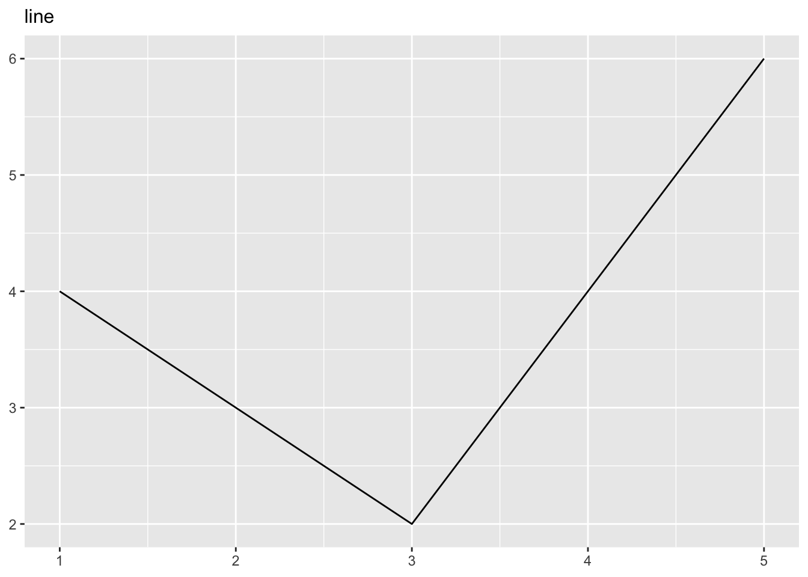
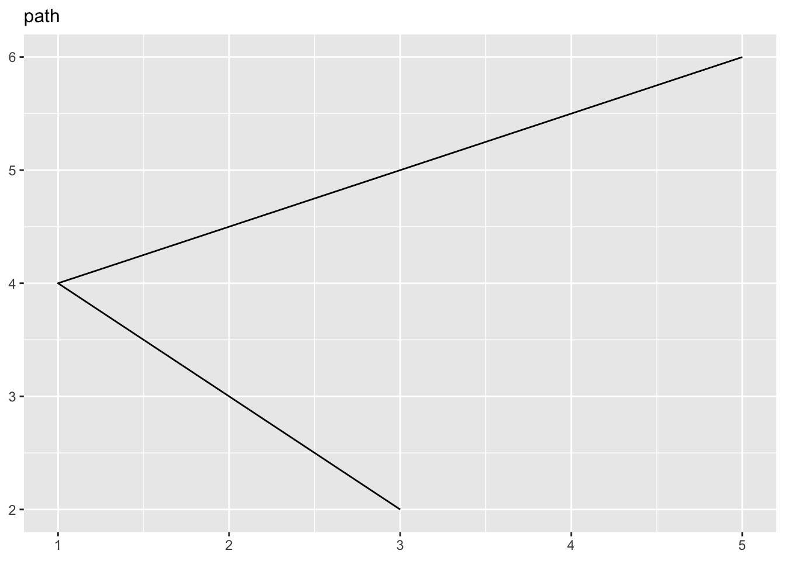

8 ggplot2
推荐查看作者写的英文书:
8.1 安装
install.packages("ggplot2")8.2 基础知识
8.2.1 ggplot图像的三个元素
每个ggplot都有三个元素组成:
- 数据(data)
在ggplot2中,数据一般是data frame(数据框).
- 一系列的美学映射(aesthetic mappings),将数据的变量和可视化的特征联系起来.
aesthetic mappings,直译为美学映射.也就是将数据的变量使用哪种图形属性进行表示.比如最为简单的一副散点图,我们可以使用x轴来表示身高,使用y轴表示体重,然后使用每个点的颜色代表性别.
- 至少一个图层(layer)用来描述变量如何展示,也就是几何对象(geometric).图层一般使用前缀为
geom_的函数进行创建.
一个简单的例子:
library(ggplot2)
ggplot(mpg, aes(x = displ, y = hwy)) +
geom_point()
这幅图中:
数据为
mpg美学映射:
displ映射到x轴,hwy映射到y轴.图层:点图.
aes()函数的前两个参数默认是x和y.
8.2.2 颜色,性状,大小和其他的美学属性(aesthetic attributes)
为了在一幅图中将=映射更多的变量,我们可以使用一些其他的美学属性(aesthetic attributes).比如,颜色,性状还有大小.
比如,将颜色映射到变量class上:
ggplot(mpg, aes(displ, cty, colour = class)) +
geom_point()如果想要将某个美学属性设置为固定值,应当在aes函数之外进行设置:
ggplot(mpg, aes(displ, hwy)) + geom_point(aes(colour = "blue"))
ggplot(mpg, aes(displ, hwy)) + geom_point(colour = "blue")

可以看一下这两幅图的差异.
8.2.3 分面(Facetting)
分面也是一种展示分类变量的方法.
ggplot2中有两种分面方式:grid和wrapped.其中wrapped.其中wrapped更为重要.需要使用facet_wrap()函数.
ggplot(mpg, aes(displ, hwy)) +
geom_point() +
facet_wrap(~class)
8.2.4 图形的图层(geom)
图层(geom)就是用来决定变量如何展示在图像上的办法.比如最常见的最简单的点图的图层就是geom_point().
geom_smooth: 对数据进行拟合.geom_boxplot:箱形图.geom_histogram:对连续变量分布进行描述.geom_bar:barplot.
- 在图中添加smooth曲线
ggplot(mpg, aes(displ, hwy)) +
geom_point() +
geom_smooth()
#> `geom_smooth()` using method = 'loess' and formula = 'y ~
#> x'
8.3 单独几何对象(individual geoms)
8.3.1 基础图形
如何理解几何对象?可以理解为图形的表现方式.我们平时所说的散点图(scatter plot),箱形图(box plot)或者柱状图(bar plot)其实就是指的不同的几何对象表现方式.
基础的几何对象都是二维的并且需要x和y轴美学映射.他们也都能够使用颜色(color)和形状(shape)对变量进行映射.
-
geom_area(): 该几何对象用来绘制面积图.线条下面使用颜色进行填充.
df <- data.frame(
x = c(3, 1, 5),
y = c(2, 4, 6),
label = c("a","b","c")
)
p <- ggplot(df, aes(x, y, label = label)) +
labs(x = NULL, y = NULL) + # Hide axis label
theme(plot.title = element_text(size = 12)) # Shrink plot title-
geom_bar(stat = "identity"): 绘制bar plot.注意我们需要将其中的参数stat设置为identify,因此默认情况下,其会统计x轴变量的个数作为y轴.
-
geom_line(): 绘制线形图.将点按照从左到右顺序进行连接.geom_path()函数与geom_line()类似,但是连接线的方式是按照他在数据中的顺序进行连接.

-
geom_point()用来画散点图.所以可以对点设置shape属性.
p + geom_point() + ggtitle("point")-
geom_polygon(),该函数用来绘制多边形.多边形的每个顶点都需要数据中的单独一行来定义.
p + geom_polygon() + ggtitle("polygon")-
geom_rect(),geom_title()和geom_raster()用来绘制长方形(rectangles).其中,geom_rect()使用四个参数来确定长方形的四个角(xmin,xmax,ymin和ymax).geom_title()和geom_rect()几乎相同,但是使用参数x和y来定义每个长方形的中心,然后使用width和height来定义每个长方形的宽度和高度.geom_raster()和geom_title()几乎相同.如果每个长方形的大小都是一致的,那么更推荐使用它,因为速度会快一些.
8.4 复杂几何对象(collective geoms)
不知道这个怎么翻译比较恰当.所有的集合对象(geom)都可以简单粗略的分为简单对象和复杂几何对象.对于简单的集合对象来说,数据的每一个观测(也就是一行),只画成一个独立的图形.比如对于散点图,每一行数据,只画一个点.而一个复杂的几何对象(collective geom)则使用几行数据来画出一个图形.这有可能是因为统计,比如boxplot,很多点才画出一个box.也有可能是图像的显示方式决定的,比如对于多边形,只有几个点才能确定一个多边形.
下面的例子我们使用nlme package的Oxboys数据进行演示.
data(Oxboys, package = "nlme")
head(Oxboys)
#> Grouped Data: height ~ age | Subject
#> Subject age height Occasion
#> 1 1 -1.0000 140.5 1
#> 2 1 -0.7479 143.4 2
#> 3 1 -0.4630 144.8 3
#> 4 1 -0.1643 147.1 4
#> 5 1 -0.0027 147.7 5
#> 6 1 0.2466 150.2 68.4.1 多个组一个美学属性(aesthetic)
有时候,我们希望将数据分成不同的组别进行画图.但是画出的图都是同样的美学属性.也就是说,你希望对每一个对象进行单独画图.这在一些longitudinal研究中非常常见.比如我们想要看每一个男孩随着时间身高的变化:
ggplot(Oxboys, aes(age, height, group = Subject)) +
geom_point() +
geom_line()每一条线代表一个男孩,一个对象.如果我们不适用group参数进行设置,那么出来的结果就是下面这样:
ggplot(Oxboys, aes(age, height)) +
geom_point() +
geom_line()另外还有一个比较有用的参数,如果对于对象并没有一个单独的group进行定义,那么就可以使用interaction()函数进行定义,比如:aes(group = interaction(school_id, student_id)).
8.4.2 多组并且多个图层(layer)
有时候我们还想对每个对象单独画图,但是需要对整体进行总结.这时候我们就需要知道怎么在ggplot2中设置整体数据(global)和特殊数据(specific data).
我们看到,我们都需要使用ggplot()参数来创建一个ggplot2图像,在ggplot()函数中设置的数据和参数称之为整体数据和整体参数,这些数据会在所有的图层中都使用.如果想要在不同的图层中使用不同的数据和参数,那么就需要在不同的图层或者说集合对象中设置数据和参数.
ggplot(Oxboys, aes(age, height)) +
geom_line(aes(group = Subject)) +
geom_smooth(method = "lm", size = 2, se = FALSE)
#> `geom_smooth()` using formula = 'y ~ x'8.5 覆盖默认分组
有一些图形的横坐标为非连续变量,但是我们仍然想要画一条线将他们连接起来.比如对于boxplot:
ggplot(Oxboys, aes(Occasion, height)) +
geom_boxplot()横坐标是非连续变量,如果我们想使用一条线将所有的人都连接起来该怎么做呢?
ggplot(Oxboys, aes(Occasion, height)) +
geom_boxplot() +
geom_line(colour = "#3366FF", alpha = 0.5)可以看到上面并不是我们想要的结果,如果想要得到我们想要的结果,需要在geom_line()函数中再次单独定义group.
ggplot(Oxboys, aes(Occasion, height)) +
geom_boxplot() +
geom_line(aes(group = Subject), colour = "#3366FF", alpha = 0.5)上面是我们想要的结果.
8.5.1 将美学属性match到图形对象上
df <- data.frame(x = 1:3,
y = 1:3,
colour = c(1, 3, 5))
ggplot(df, aes(x, y, colour = factor(colour))) +
geom_line(aes(group = 1), size = 2) +
geom_point(size = 5)这幅图中,colour是非连续变量.第一个点和第一条线是红色的.第二条线和第二个点事绿色的,第三个点(没有对应的线)则是蓝色的.
ggplot(df, aes(x, y, colour = colour)) +
geom_line(aes(group = 1), size = 2) +
geom_point(size = 5)这幅图中colour是连续的.